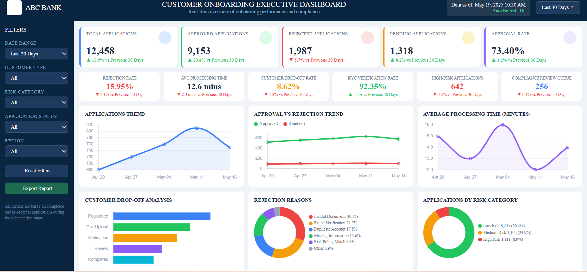

Business Analysis Case Study focused on improving onboarding efficiency, strengthening KYC controls, reducing manual intervention, and enhancing executive visibility through dashboard reporting.
Digital banks operate in a highly competitive and regulated environment where customer experience, onboarding speed, and compliance are critical to success. This project analyzed the current onboarding process, identified operational and compliance gaps, and designed a future-state onboarding framework supported by executive reporting and dashboard capabilities.
Digital Banking
Business Analysis Case Study
BPMN & Process Improvement
Executive Dashboard Design
The executive dashboard provides management with real-time visibility into customer onboarding performance, approval trends, processing times, customer drop-off rates, KYC effectiveness, compliance reviews, and operational bottlenecks.

The dashboard provides real-time visibility into onboarding performance, approval rates, processing times, customer drop-off trends, KYC verification effectiveness, and compliance review activities.